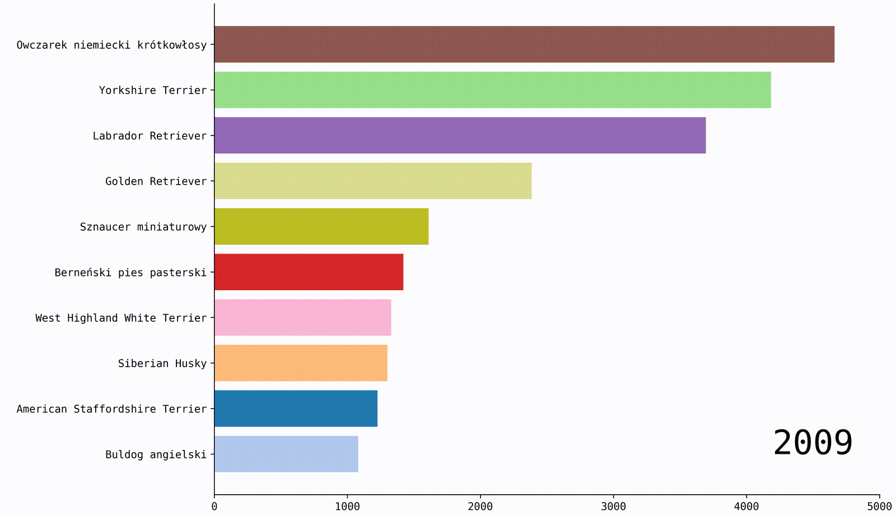

Dog breed in Poland
29 August 2024
There is a lot of interesting details hidden in official data of Polish Kennel Club ... TBC
Source of data
The data used for this analysis was once available on the website https://www.zkwp.pl/sprawozdania/spr\_hod\_{year}.pdf , where year ranges from 2009 to 2023. Unfortunately, this website is not available anymore. To overcome this we can use the archived version of those websites using Web Archive. Fortunately, all of the years are available. Now we need to download all PDFs and convert them to .csv files. For that I have use tabula-java tool. No tool is perfect, so after that some corrections has to be made by hand. One remark: in 2020 the way of recording data has changed. Before all breeds were in alphabetical order, after they are first grouped into breeds group and the alphabetically. However, for our statistical analysis it does not change anything.
Once we have complete and corrected .csv files we can take a look at it. We see 7 columns, which are:
- total number of dogs (bitches)
- including breeding dogs (bitches)
- puppies dogs (bitches)
- litters
Data
First let us look at the total number of dogs registered in Poland. We can observe here an interesting trend. We see first a substantial decline in number of registered dogs, with the lowest point in 2013. After this there is a rebound and steady (linear) grow until 2020. From 2020 to 2022 there is once again a linear grow, but twice as fast as it was before. During the pandemic more people got interested in breeding dogs. In 2023, for the first time in 10 years, there is a decline. The dots were added to the plot to highlight those key moments in recent history.
It is easy to determine what exactly happened between 2011 and 2014. It could be internal issue (e.g. bad decisions of a president of a Kennel Club) or external (e.g. new law).
Not only total number of dogs have this trend. All categories behave similarly.
Next we can take a look at the percentage of breeding dogs. One can see that percent of breeding dogs from total number of dogs is growing linearly. In 2009 about 39% of all dogs were breeding dogs and 14 years later it is around 49%. In 2020 (first pandemic year) this percentage was artificially raised by may people who decided to start their own dog farms while sitting at home.
How many breeds are present in Poland? Let's take a look at breed with at least one dog registered. There is a clear linear trend. In 2009 there were 260 breeds registered and in 2023 it is 380, which is 45% grow! It means that each year we have around 8 new breeds present in Poland.
Some other interesting statistics:
- a breeding bitch has two partners on average
- in an average litter 4.9 puppies are born
- in a year around 45% of breeding bitches litters
- in other words, each bitch litters every 2 years
Breeds
Now let's analyze each breed separately. First, we take a look at Top10 popular breed acrros the years. It is hard to read so let's try moving version:
